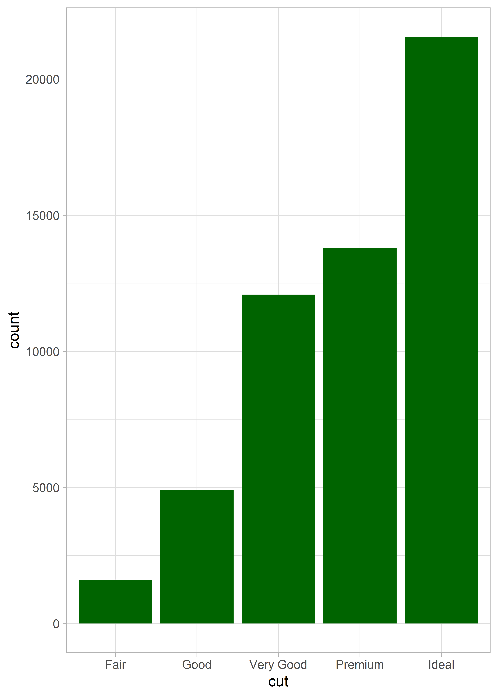
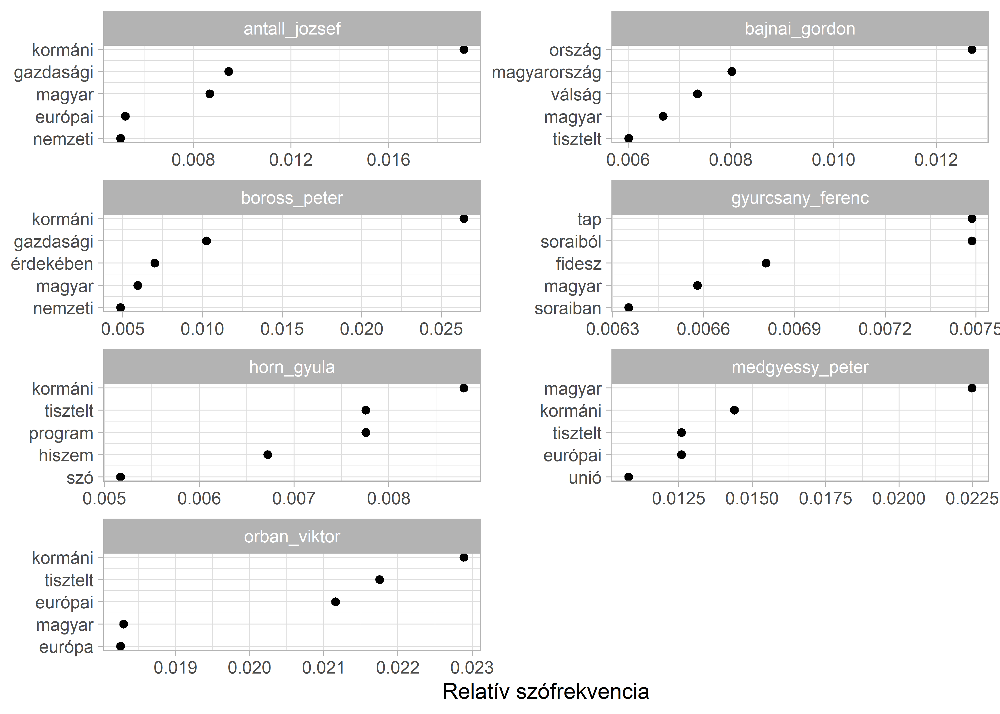
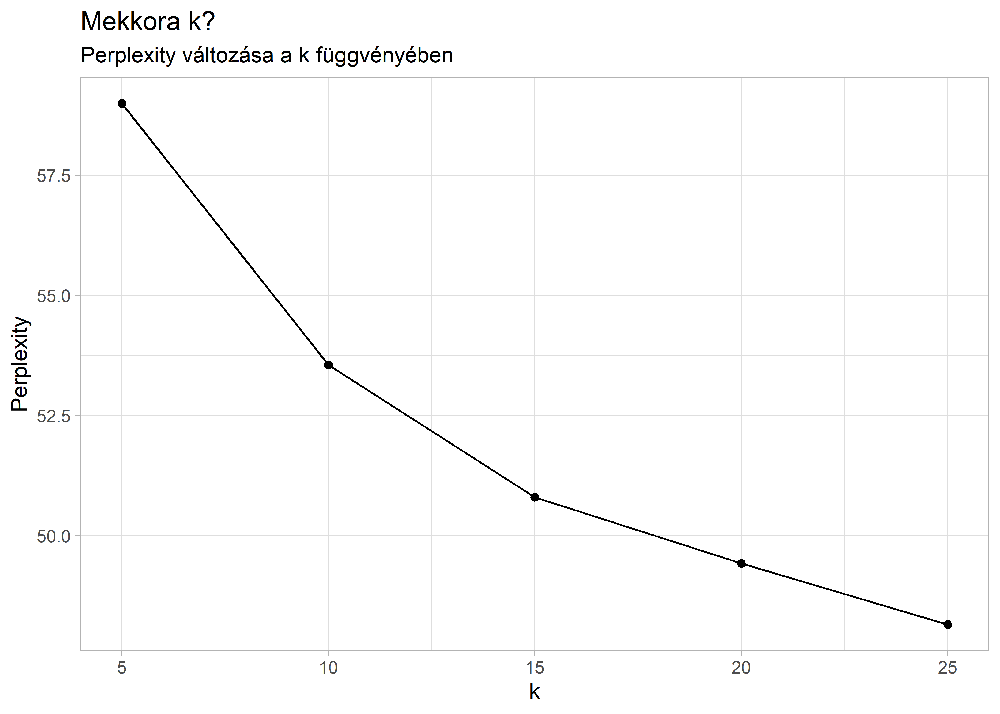
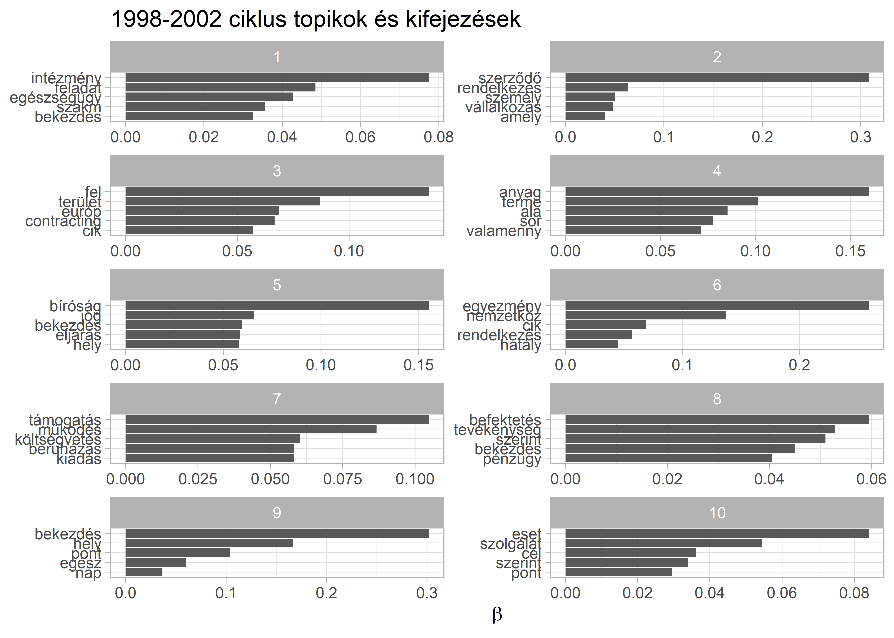

9 Felügyelet nélküli tanulás: Topik modellezés magyar törvényszövegeken
A klaszterezés egy adathalmaz pontjainak, rekordjainak hasonlóság alapján való csoportosítása, ami szinte minden nagyméretű adathalmaz leíró modellezésére alkalmas. A klaszterezés során az adatpontokat diszjunkt halmazokba, azaz klaszterekbe soroljuk, hogy az elemeknek egy olyan partíciója jöjjön létre, amelyben a közös csoportokba kerülő elempárok lényegesen hasonlóbbak egymáshoz, mint azok a pontpárok, melyek két különböző csoportba sorolódtak. Klaszterezés során a megfelelő csoportok kialakítása nem egyértelmű feladat, mivel a különböző adatok eltérő jelentése és felhasználása miatt adathalmazonként más szempontokat kell figyelembe vennünk. Egy klaszterezési feladat megoldásához ismernünk kell a különböző algoritmusok alapvető tulajdonságait és mindig szükség van az eredményként kapott klaszterezés kiértékelésére. Mivel egy klaszterezés az adatpontok hasonlóságából indul ki, ezért az eljárás során az első fontos lépés az adatpontok páronkénti hasonlóságát lehető legjobban megragadó hasonlósági függvény kiválasztása (tan2011?). Számos klaszterezési eljárás létezik, melyek között az egyik leggyakoribb különbségtétel, hogy a klaszterek egymásba ágyazottak vagy sem. Ez alapján beszélhetünk hierarchikus és felosztó klaszterezésről.
A hierarchikus klaszterezés egymásba ágyazott klaszterek egy fába rendezett halmaza, azaz ahol a klaszterek alklaszterekkel rendelkeznek. A fa minden csúcsa (klasztere), a levélcsúcsokat kivéve, a gyermekei (alklaszterei) uniója, és a fa gyökere az összes objektumot tartalmazó klaszter. Felosztó (partitional) klaszterezés esetén az adathalmazt olyan, nem átfedő alcsoportokra bontjuk, ahol minden adatobjektum pontosan egy részhalmazba kerül (tikk2007?; tan2011b?). A klaszterezési eljárások között aszerint is különbséget tehetünk, hogy azok egy objektumot csak egy vagy több klaszterbe is beilleszthetnek. Ez alapján beszélhetünk kizáró (exclusive), illetve nem-kizáró (non exclusive), vagy átfedő (overlapping) klaszterezésről. Az előbbi minden objektumot csak egyetlen klaszterhez rendel hozzá, az utóbbi esetén egy pont több klaszterbe is beleillik. Fuzzy klaszterezés esetén minden objektum minden klaszterbe beletartozik egy tagsági súly erejéig, melynek értéke 0 (egyáltalán nem tartozik bele) és 1 (teljesen beletartozik) közé esik. A klasztereknek is különböző típusai vannak, így beszélhetünk prototípus-alapú, gráf-alapú vagy sűrűség-alapú klaszterekről.
A prototípus-alapú klaszter olyan objektumokat tartalmazó halmaz, amelynek mindegyik objektuma jobban hasonlít a klasztert definiáló objektumhoz, mint bármelyik másik klasztert definiáló objektumhoz. A prototípus-alapú klaszter klaszterek közül a K-közép klaszter az egyik leggyakrabban alkalmazott. A K-közép klaszterezési módszer első lépése K darab kezdő középpontot kijelölése, ahol K a klaszterek kívánt számával egyenlő. Ezután minden adatpontot a hozzá legközelebb eső középponthoz rendelünk. Az így képzett csoportok lesznek a kiinduló klaszterek. Ezután újra meghatározzuk mindegyik klaszter középpontját a klaszterhez rendelt pontok alapján. A hozzárendelési és frissítési lépéseket felváltva folytatjuk addig, amíg egyetlen pont sem vált klasztert, vagy ameddig a középpontok ugyanazok nem maradnak (tan2011c?).
9.1 K közép klaszterezés kvalitatív adatokkal
A K közép klaszterezés tehát a dokumentumokat alkotó szavak alapján keresi meg a felhasználó által megadott számú (K) klasztert, amelyeket a középpontjaik képviselnek, és így rendezi a dokumentumokat csoportokba. A klaszterezés vagy csoportosítás egy induktív kategorizálás, ami akkor hasznos, amikor nem állnak a kutató rendelkezésére előzetesen ismert csoportok, amelyek szerint a vizsgált dokumentumokat rendezni tudná. Hiszen ebben az esetben a korpusz elemeinek rendezéséhez nem határozunk meg előzetesen csoportokat, hanem az eljárás során olyan különálló csoportokat hozunk létre a dokumentumokból, amelynek tagjai valamilyen szempontból hasonlítanak egymásra. A csoportosítás legfőbb célja az, hogy az egy csoportba kerülő szövegek minél inkább hasonlítsanak egymásra, miközben a különböző csoportba kerülők minél inkább eltérjenek egymástól. Azaz klaszterezésnél nem egy-egy szöveg jellemzőire vagyunk kíváncsiak, hanem arra, hogy a szövegek egy-egy csoportja milyen hasonlóságokkal bír. (tikk2007a? ; burtejin2016?) A gépi kódolással végzett klaszterezés egy felügyelet nélküli tanulás, mely a szöveg tulajdonságaiból tanul, anélkül, hogy előre meghatározott csoportokat ismerne. Alkalmazása során a dokumentum tulajdonságait és a modell becsléseit felhasználva jönnek létre a különböző kategóriák, melyekhez később hozzárendeli a szöveget (grimmer2013:15?). Az osztályozással ellentétben a csoportosítás esetén tehát nincs ismert „címkékkel" ellátott kategóriarendszer vagy olyan minta, mint az osztályozás esetében a tanítókörnyezet, amiből tanulva a modellt fel lehet építeni (tikk2007b:145?). A gépi kódolással végzett csoportosítás (klaszterezés) esetén a kutató feladata a megfelelő csoportosító mechanizmus kiválasztása, mely alapján egy program végzi el a szövegek különböző kategóriákba sorolását. Ezt követi a hasonló szövegeket tömörítő csoportok elnevezésének lépése. A több dokumentumból álló korpuszok esetében a gépi klaszterelemzés különösen eredményes és költséghatékony lehet, mivel egy nagy korpusz vizsgálata sok erőforrást igényel (grimmer2013a:1?).
A klaszterezés bemutatásához a rendszerváltás utáni magyar miniszterelnökök egy-egy véletlenszerűen kiválasztott beszédét használjuk.
library(readr)
library(dplyr)
library(stringr)
library(readtext)
library(quanteda)
library(ggplot2)
library(topicmodels)
library(factoextra)A beszédek szövege meglehetősen tiszta, ezért az egyszerűség kedvéért a most kihagyjuk a szövegtisztítás lépéseit. Az elemzés első lépéseként a quanteda csomaggal egy korpusz kreálunk, majd abból egy dokumentum-kifejezés mátrixot készítünk a dfm() függvénnyel.
beszedek <- read_csv("data/miniszterelnokok.csv")
beszedek_corpus <- corpus(beszedek)
beszedek_dfm <- dfm(beszedek_corpus)A beszédek klaszterekbe rendezését az R egyik alapfüggvénye végzi, a kmeans. Első lépésben 3 klasztert készítünk. A table() függvénnyel megnézhetjük hogy egy-egy csoportba hány dokumentum került.
beszedek_klaszter <- kmeans(beszedek_dfm, centers = 2)
table(beszedek_klaszter$cluster)
#>
#> 1 2
#> 5 2A felügyelet nélküli klasszifikáció nagy kérdése, hogy hány klasztert készítsünk, hogy megközelítsük a valóságot és ne csak mesterségesen kreáljunk csoportokat abban az esetben is amikor ténylegesen nem léteznek. A kvalitatív megközelítések mellett kvantitatív opciók is vannak. A factoextra csomagban több ilyen módszer is van implementálva. A lenti ábra azt mutatja hogy a klasztereken belüli négyzetösszegek hogyan változnak a k paraméter változásának függvényében. A lenti ábra alapján az ideális klaszter szám 2.
fviz_nbclust(as.matrix(beszedek_dfm), kmeans, method = "wss", k.max = 5)
Vizuálisan is megjeleníthetjük a kialakított csoportokat.
fviz_cluster(beszedek_klaszter, data = beszedek_dfm)
9.2 Látens Dirichlet Allokáció topik modellek11
A topik-modellezés a dokumentumok téma-klasztereinek meghatározására szolgáló valószínűség-alapú eljárás, amely szó-gyakoriságot állapít meg minden témához, és minden dokumentumhoz hozzárendeli az adott témák valószínűségét. A topik modellezés egy felügyelet nélküli tanulási módszer, amely során az alkalmazott algoritmus a dokumentum tulajdonságait és a modell becsléseit felhasználva hoz létre különböző kategóriákat, melyekhez később hozzárendeli a szöveget (tikk2007c?; grimmer2013b?; burtejin2016a?). Az egyik leggyakrabban alkalmazott topik modellezési eljárás, a Látens Dirichlet Allokáció (LDA) alapja az a feltételezés, hogy minden korpusz topikok/témák keverékéből áll, ezen témák pedig statisztikailag a korpusz szókészlete valószínűségi függvényeinek (eloszlásának) tekinthetőek (blei2003?). Az LDA a korpusz dokumentumainak csoportosítása során az egyes dokumentumokhoz topik szavakat rendel, a topikok megbecsléséhez pedig a szavak együttes megjelenését vizsgálja a dokumentum egészében. Az LDA algoritmusnak előzetesen meg kell adni a keresett klaszterek (azaz a keresett topikok) számát, ezt követően a dokumentumhalmazban szereplő szavak eloszlása alapján az algoritmus azonosítja a kulcsszavakat, amelyek eloszlása kirajzolja a topikokat (blei2003a?; burtejin2016b?; Jacobi, Van Atteveldt, and Welbers 2016).

A következőkben a magyar törvények korpuszán szemléltetjük a topik modellezés módszerét, hogy a mesterséges intelligencia segítségével feltárjuk a korpuszon belüli rejtett összefüggéseket. A korábban leírtak szerint tehát nincsenek előre meghatározott kategóriáink, dokumentumainkat a klaszterezés segítségével szeretnénk csoportosítani. Egy-egy dokumentumban keveredhetnek a témák és az azokat reprezentáló szavak. Mivel ugyanaz a szó több topikhoz is kapcsolódhat, így az eljárás komplex elemzési lehetőséget nyújt, az egy szövegen belül témák és akár azok dokumentumon belüli súlyának azonosítására. Példánkban csak a korpusz egy részén szemléltetjük a topik modellezést, a teljes korpusz és annak elemzéséhez szükséges kód elérhető az alábbi github linken: https://github.com/poltextlab
Az alábbiakban 1998-2002 és a 2002-2006-os parlamenti ciklus 1032 törvényszövegének topik modellezését és a szükséges előkészítő, korpusztisztító lépéseket mutatjuk be. Az következőkben használt fájlok letölthetőek az alábbi github linkről: https://github.com/poltextlab/text_mining_with_r A fájlokat töltsük be az R által használt munkakönyvtárba.12
Töltsük be az elemezni kívánt csv fájlt, megadva az elérési útvonalát.
torvenyek <- read_csv("data/lawtext_1998_2006.csv")Az előző fejezetekben láthattuk hogy hogyan lehet használni a stringr csomagot a szövegtisztításra. A lépések a már megismert sztenderd folyamatot követik: számok, központozás, sortörések, extra szóközök eltávolítása, illetve a szöveg kisbetűsítése. Az eddigieket további szövegtisztító lépésekkel is kiegészíthetjük. Olyan elemek esetében, amelyek nem feltétlenül különálló szavak és el akarjuk távolítani őket a korpuszból szintén az str_remove_all() a legegyszerűbb megoldás.
torvenyek_tiszta <- torvenyek %>%
mutate(
text = str_remove_all(string = text, pattern = "[:cntrl:]"),
text = str_remove_all(string = text, pattern = "[:punct:]"),
text = str_remove_all(string = text, pattern = "[:digit:]"),
text = str_to_lower(text),
text = str_trim(text),
text = str_squish(text),
text = str_remove_all(string = text, pattern = "’"),
text = str_remove_all(string = text, pattern = "…"),
text = str_remove_all(string = text, pattern = "–"),
text = str_remove_all(string = text, pattern = "“"),
text = str_remove_all(string = text, pattern = "”"),
text = str_remove_all(string = text, pattern = "„"),
text = str_remove_all(string = text, pattern = "«"),
text = str_remove_all(string = text, pattern = "»"),
text = str_remove_all(string = text, pattern = "§"),
text = str_remove_all(string = text, pattern = "°"),
text = str_remove_all(string = text, pattern = "<U+25A1>"),
text = str_remove_all(string = text, pattern = "<U+25A1>"),
text = str_remove_all(string = text, pattern = "@")
)A dokumentum változókat egy külön fájlból adjuk hozzá, ami a törvények keletkezési évét tartalmazza, illetve hogy melyik kormányzati ciklusban születtek. Mindkét adatbázisban egy közös egyedi azonosító jelöli az egyes törvényeket, így ki tudjuk használni a dplyr left_join() függvényét, ami hatékonyan és gyorsan kapcsol össze adatbázisokat közös egyedi azonosító mentén. Jelen esetben ez az egyedi azonosító a txt_filename oszlopból fog elkészülni, amely a torvenyek neveit tartalmazza. Első lépésben betöltjük a meta adatokat tartalmazó .csv fájlt, majd a .txt rész előtti törvényneveket tartjuk csak meg a létrehozott doc_id- oszlopban. A [^\\.]* regular expression itt a string elejétől indulva kijelöl mindent az elso . karakterig. Az str_extract() pedig ezt a kijelölt string szakaszt (ami a törvények neve) menti át az új változónkba.
torveny_meta <- read_csv("data/cap_law_meta.csv")
torveny_meta <- torveny_meta %>%
mutate(doc_id = str_extract(txt_filename, "[^\\.]*")) %>%
select(-txt_filename)
head(torveny_meta, 5)
#> # A tibble: 5 x 4
#> year electoral_cycle majortopic doc_id
#> <dbl> <chr> <dbl> <chr>
#> 1 1998 1998-2002 13 1998XXXV
#> 2 1998 1998-2002 20 1998XXXVI
#> 3 1998 1998-2002 3 1998XXXVII
#> 4 1998 1998-2002 6 1998XXXVIII
#> 5 1998 1998-2002 13 1998XXXIXVégül összefűzzük a dokumentumokat és a meta adatokat tartalmazó data frameket.
torveny_final <- left_join(torvenyek_tiszta, torveny_meta, by = "doc_id")Majd hozzuk létre a korpuszt és ellenőrizzük azt.
#> Text Types Tokens Sentences year electoral_cycle majortopic
#> 1 1998L 2879 9628 1 1998 1998-2002 3
#> 2 1998LI 352 680 1 1998 1998-2002 20
#> 3 1998LII 446 992 1 1998 1998-2002 9
#> 4 1998LIII 126 221 1 1998 1998-2002 9
#> 5 1998LIV 835 2013 1 1998 1998-2002 9Az RStudio environments fülén láthatjuk, hogy egy 1032 elemből álló korpusz jött létre, amelynek tartalmát a summary() paranccsal kiíratva a console ablakban megjelenik a dokumentumok listája és a főbb leíró statisztikai adatok (egyedi szavak - types; szószám - tokens; mondatok - sentences). Az előbbi fejezettől eltérően most a tokenizálás során is végzünk még egy kis tisztítást: a felesleges stop szavakat kitöröljük a tokens_remove() és stopwords() kombinálásával. A quanteda tartalmaz egy beépített magyar stopszó szótárat. A második lépésben szótövesítjük a tokeneket a tokens_words() használatával, ami szintén képes a magyar nyelvű szövegeket kezelni.
Szükség esetén a beépített magyar nyelvű stopszó szótárat saját stopszavakkal is kiegészíthetjük. Ehhez először csv fájlba el kell mentenünk a stopszavakat, majd a csv fájlt be kell olvasnunk. Az pull() egy karaktervektort fog kreálni a data frame text oszlopából.
custom_stopwords <- readtext("data/custom_legal_stopwords.csv", encoding = "UTF8") %>%
pull(text)Mivel jogi szövegekről van szó, ezért még egy kis extra szószedetet is készítűnk a felesleges szavakról.
custom_stopwords_egyeb <- c("lábjegyzet", "országgyulés", "ülésnap")Aztán pedig a pipe használatával elkészítjük a token objektumunkat. A szótövesített tokeneket egy külön objektumban tároljuk, mert gyakran előfordul hogy
torvenyek_tokens <- tokens(torvenyek_corpus) %>%
tokens_remove(stopwords("hungarian")) %>%
tokens_remove(custom_stopwords) %>%
tokens_remove(custom_stopwords_egyeb) %>%
tokens_wordstem(language = "hun")Végül eltávolítjuk a dokumentum kifejezés mátrixból a túl gyakori kifejezéseket. A dfm_trim() függvénnyel a nagyon ritka és nagyon gyakori szavak megjelenését kontrollálhatjuk. A termfreq_type opció "prop" akkor 0 és 1.0 közötti értéket vehetnek fel a max_termfreq/docfreq és min_termfreq/docfreq paraméterek. A lenti példában azokat a tokeneket tartjuk meg, amelyek legalább egyszer előfordulnak ezer dokumentumonként (így kizárva a nagyon ritka kifejezéseket).
torvenyek_dfm <- dfm(torvenyek_tokens) %>%
dfm_trim(min_termfreq = 0.001, termfreq_type = "prop")A szövegtisztító lépesek eredményét úgy ellenőrizhetjük, hogy az 2. fejezetben bemutatottak szerint szógyakorisági listát készítünk a korpuszban maradt kifejezésekről. Itt kihasználhatjuk a korpuszunkban lévő meta adatokat és megnézhetjük ciklus szerinti bontásban a szófrekvencia ábrát. Az ábránál figyeljünk arra hogy a tidytext reorder_within fuggvenyet használjuk, ami egy nagyon hasznos megoldás a csoportosított sorrendbe rendezésre a ggplot ábránál.
library(tidytext)
top_tokens <- textstat_frequency(torvenyek_dfm, n = 15, groups = docvars(torvenyek_dfm, field = "electoral_cycle"))
ggplot(top_tokens, aes(reorder_within(feature, frequency, group), frequency)) +
geom_point(aes(shape = group), size = 2) +
coord_flip() +
labs(
y = NULL,
x = "szófrekvencia",
title = "A 15 leggyakoribb token a korpuszban"
) +
facet_wrap(~group, nrow = 2, scales = "free") +
tidytext::scale_x_reordered()
A szövegtisztító lépéseket később újabbakkal is kiegészíthetjük, ha észrevesszük, hogy az elemzést zavaró tisztítási lépés maradt ki. Ilyen esetben tovább tisztíthatjuk a korpuszt, majd újra lefuttathatjuk az elemzést. Például, ha szükséges, további stopszavak eltávolítását is elvégezhetjük egy újabb stopszólista hozzáadásával. Ilyenkor ugyanúgy járunk el, mint az előző stopszólista esetén, vagyis beolvassuk a munkakönyvtárban elhelyezett a csv fájlt, a beolvasott stopszólistából karakter vektort majd objektumot hozunk létre, végezetül pedig ezeket a szavakat is eltávolítjuk a kopuszból.
custom_stopwords2 <- readtext("data/custom_stopwords2.csv", encoding = "UTF8") %>%
pull(text)
torvenyek_tokens_final <- torvenyek_tokens %>%
tokens_remove(custom_stopwords2)Ezután újra ellenőrízzük az eredményt.
torvenyek_dfm_final <- dfm(torvenyek_tokens_final) %>%
dfm_trim(min_termfreq = 0.001, termfreq_type = "prop")
top_tokens_final <- textstat_frequency(torvenyek_dfm_final, n = 15, groups = docvars(torvenyek_dfm, field = "electoral_cycle"))
ggplot(top_tokens_final, aes(reorder_within(feature, frequency, group), frequency)) +
geom_point(aes(shape = group), size = 2) +
coord_flip() +
labs(
y = NULL,
x = "szófrekvencia",
title = "A 15 leggyakoribb token a korpuszban",
subtitle = "Eredmény a bovített stop szó listával"
) +
facet_wrap(~group, nrow = 2, scales = "free") +
tidytext::scale_x_reordered()
A szövegtisztító és korpusz előkészítő műveletek után következhet az LDA illesztése. Az alábbiakban az LDA illesztés két módszerét a VEM-et és a Gibbs-et mutatjuk be. A modell minkét módszer esetén ugyanaz, a különbség a következtetés módjában van. A VEM módszer variációs következtetés, míg a Gibbs mintavételen alapuló következtetés. (blei2003?; Griffiths2002?; Phan2008?)
A két modell illesztése nagyon hasonló, meg kell adnunk, az elemezni kívánt dfm nevét, majd a „k" értékét, ami egyenlő az általunk létrehozni kívánt topikok számával, ezt követően meg kell jelölnünk, hogy a VEM vagy a Gibbs módszert alkalmazzuk. A set.seed() a funkció az R véletlen szám generátor magjának beállítására szolgál, ami ahhoz kell, hogy az eredmény, ábra, stb. pontosan reprodukálható legyen. A set.seed() bármilyen tetszőleges egész szám lehet. Kihasználhatjuk hogy minden dokumentumhoz tartozik egy kormányzati ciklus azonosító, mivel ésszerű lehet a feltételezés, hogy különböző parlamentek és kormányok más-más jogalkotási fokusszal rendelkeznek. A dokumentum változók alapján a dfm_subset()-el tudjuk feldarabolni a már elkészült és tisztított mátrixunkat.
dfm_98_02 <- dfm_subset(torvenyek_dfm_final, electoral_cycle == "1998-2002")
dfm_02_06 <- dfm_subset(torvenyek_dfm_final, electoral_cycle == "2002-2006")9.2.1 A „VEM" módszer alkalmazása a magyar törvények korpuszán
Saját korpuszunkon először a VEM a módszert alkalmazzuk, ahol k = 10 azaz a modell 10 témacsoportot alakít ki. Mint arról korábban már volt szó a k értékét szabadon változtathatjuk, aszerint hogy hány topik kialakítását szeretnénk. Bár a k értékének meghatározása kutatói döntésen alapul, és a modell futtatása során bevett gyakorlat a különböző „k" értékekkel való kísérletezés, miután elkészült az elemzés a perplexity() funkció segítségével – ahol a theta az adott topikhoz való tartozás valószínűsége – lehetőségünk van az elkészült modell kiértékelésére. A függvény a topikok által reprezentált elméleti szóeloszlásokat hasonlítja össze a szavak tényleges eloszlásával a dokumentumokban. A függvény értéke nem önmagában értelmezendő, hanem két modell összehasonlításában, ahol a legalacsonyabb perplexity (zavarodottság) értékkel rendelkező modellt tekintik a legjobbnak.[^klaszeterzes-2] Az illusztráció kedvéért lefuttatunk5 LDA modellt az 1998-2002 kormánzyati ciklushoz tartozó dfm-en. Az iterációhoz a purrr csomag map függvényét használjuk (ez a lapply tidyverse ekvivalense). Fontos emlékezni arra, hogy minél nagyobb a korpuszunk annál több számítási kapacitásra van szükség (és annál tovább tart a számítás).
[^klaszeterzes-2] http://brooksandrew.github.io/simpleblog/articles/latent-dirichlet-allocation-under-the-hood/
library(purrr)k_topics <- c(5, 10, 15, 20, 25)
lda_98_02 <- k_topics %>%
map(LDA, x = dfm_98_02, control = list(seed = 1234))
tibble(
k = k_topics,
perplexity = map_dbl(lda_98_02, perplexity)
) %>%
ggplot(aes(k, perplexity)) +
geom_point() +
geom_line() +
labs(
title = "Mekkora k?",
subtitle = "Perplexity változása a k függvényében",
x = "k",
y = "Perplexity"
)
A perplexity pontszám alapján a 25 topikos modell szerepel a legjobban, de fontos emlékezni arra hogy a megfelelő k kiválasztása a kutató kvalitatív döntésén múlik. Ehhez természetesen kvantitatív szempontokat is figyelembe vehetünk, mint például a perplexity indikátor.13
A reprodukálhatóság és futási sebesség érdekében a fejezet további részeiben a k paraméternek 10-es értéket adunk. Ezzel lefututtatunk egy-egy modellt a két ciklusra.
vem_98_02 <- LDA(dfm_98_02, k = 10, method = "VEM", control = list(seed = 1234))
vem_02_06 <- LDA(dfm_02_06, k = 10, method = "VEM", control = list(seed = 1234))Ezt követően a modell által létrehozott topic-okat tidy formátumba tesszük és egyesítjük egy data frameben.14
library(tidytext)topics_98_02 <- tidy(vem_98_02, matrix = "beta") %>%
mutate(electoral_cycle = "1998-2002")
topics_02_06 <- tidy(vem_02_06, matrix = "beta") %>%
mutate(electoral_cycle = "2002-2006")
lda_vem <- bind_rows(topics_98_02, topics_02_06)Majd listázzuk az egyes topikokhoz tartozó leggyakoribb kifejezéseket.
top_terms <- lda_vem %>%
group_by(electoral_cycle, topic) %>%
top_n(5, beta) %>%
top_n(5, term) %>%
ungroup() %>%
arrange(topic, -beta)Majd a ggplot2 csomag segítségével ábrán is megjeleníthetjük az egyes topikok 10 legfontosabb kifejezését.
top_terms %>%
filter(electoral_cycle == "1998-2002") %>%
ggplot(aes(reorder_within(term, beta, topic), beta)) +
geom_col(show.legend = FALSE) +
facet_wrap(~topic, scales = "free", ncol = 2) +
coord_flip() +
labs(
title = "1998-2002 ciklus topikok és kifejezések",
x = NULL,
y = expression(beta)
) +
tidytext::scale_x_reordered()
top_terms %>%
filter(electoral_cycle == "2002-2006") %>%
ggplot(aes(reorder_within(term, beta, topic), beta)) +
geom_col(show.legend = FALSE) +
facet_wrap(~topic, scales = "free", ncol = 2) +
coord_flip() +
labs(
title = "2002-2006 ciklus topikok és kifejezések",
x = NULL,
y = expression(beta)
) +
tidytext::scale_x_reordered()
9.2.2 Az „LDA Gibbs" módszer alkalmazása a magyar törvények korpuszán
A következőkben ugyanazon a korpuszon az LDA Gibbs módszert alkalmazzuk. A szövegelőkészítő és tisztító lépések ennél a módszernél is ugyanazok mint a fentebb bemutatott “VEM” módszer esetében, így itt most csak a modell illesztését mutatjuk be.
gibbs_98_02 <- LDA(dfm_98_02, k = 10, method = "Gibbs", control = list(seed = 1234))
gibbs_02_06 <- LDA(dfm_02_06, k = 10, method = "Gibbs", control = list(seed = 1234))Itt is elvégezzük a topikok tidy formátumra alakítását.
topics_g98_02 <- tidy(gibbs_98_02, matrix = "beta") %>%
mutate(electoral_cycle = "1998-2002")
topics_g02_06 <- tidy(gibbs_02_06, matrix = "beta") %>%
mutate(electoral_cycle = "2002-2006")
lda_gibbs <- bind_rows(topics_g98_02, topics_g02_06)Majd listázzuk az egyes topikokhoz tartozó leggyakoribb kifejezéseket.
top_terms_gibbs <- lda_gibbs %>%
group_by(electoral_cycle, topic) %>%
top_n(5, beta) %>%
top_n(5, term) %>%
ungroup() %>%
arrange(topic, -beta)Majd a ggplot2 csomag segítségével ábrán is megjeleníthetjük.
top_terms_gibbs %>%
filter(electoral_cycle == "1998-2002") %>%
ggplot(aes(reorder_within(term, beta, topic), beta)) +
geom_col(show.legend = FALSE) +
facet_wrap(~topic, scales = "free", ncol = 2) +
coord_flip() +
labs(
title = "1998-2002 ciklus topikok és kifejezések",
x = NULL,
y = expression(beta)
) +
tidytext::scale_x_reordered()
top_terms_gibbs %>%
filter(electoral_cycle == "2002-2006") %>%
ggplot(aes(reorder_within(term, beta, topic), beta)) +
geom_col(show.legend = FALSE) +
facet_wrap(~topic, scales = "free", ncol = 2) +
coord_flip() +
labs(
title = "2002-2006 ciklus topikok és kifejezések",
x = NULL,
y = expression(beta)
) +
scale_x_reordered()
9.3 Struktúrális topik modellek
A kvantitatív szövegelemzés elterjedésével együtt megjelentek a módszertani innovációk is és a probabilisztikus topic modellek esetében ez a politikatudomány területéről érkezett. Roberts et al. (2014) egy kíváló cikkben mutatta be a struktúrális topic modelleket (structural topic models, stm) ahol a fő újítás az az hogy a dokumentumok metaadatai kovariánsként tudják befolyásolni hogy egy-egy kifejezés mekkora valószínűséggel lesz egy-egy téma része. A kovariánsok egyrészről megmagyarázhatják hogy egy-egy dokumentum mennyire függ össze egy-egy témával (topical prevalence), illetve hogy egy-egy szó mennyire függ össze egy-egy témán belül (topical content).
Az stm modell becslése során mindkét típusú kovariánst használhatjuk, illetve hogyha nem adunk meg dokumentum meta adatot akkor az stm csomag stm függvénye a Korrelált Topic Modell-t fogja becsülni.
Az stm modelleket az R-ben az stm csomaggal tudjuk kivitelezni. A csomag fejlesztői között van a módszer kidolgozója is, ami nem ritka az R csomagok esetében.
library(stm)A lenti lépésekben a csomag dokumentációjában szereplő ajánlásokat követjük, habár a könyv írásakor a stm már képes volt a quanteda-ban létrehozott dfm-ek kezelésére is. A kiinduló adatbázisunk a törvény_final amit a fejezet elején hoztunk létre a dokuemntumokból és a metaadatokból. A javasolt munkafolyamat a textProcessor()-használatával indul, ami szintén tartalmazza az alap szöveg előkészítési lépéseket. Az egyszerűség és futási sebesség érdekében itt most ezek többségétől eltekintünk, mivel a fejezet korábbi részeiben részletesen tárgyaltuk őket.
Az előkészítés utolsó szakaszában az out objektumban tároljuk el a dokumentumokat, egyedi szavakat, illetve a meta adatokat (kovariánsokat).
data_stm <- torveny_final
processed_stm <- textProcessor(
torveny_final$text,
metadata = torveny_final,
lowercase = FALSE,
removestopwords = FALSE,
removenumbers = FALSE,
removepunctuation = FALSE,
ucp = FALSE,
stem = TRUE,
language = "hungarian",
verbose = FALSE
)
out <- prepDocuments(processed_stm$documents, processed_stm$vocab, processed_stm$meta)
#> Removing 96264 of 180243 terms (96264 of 1252793 tokens) due to frequency
#> Your corpus now has 1032 documents, 83979 terms and 1156529 tokens.A struktúrális topic modellünket az stm függvénnyel becsüljük és a kovariánsokat a prevalence opciónál tudjuk formulaként megadni. A lenti példában a Comparative Agendas Projekt kategóriáit (pl.: gazdaság, egészségügy, stb.) és a kormányciklusokat használjuk. A futási idő kicsit hosszabb mint az LDA modellek esetében.
stm_fit <- stm(
out$documents,
out$vocab,
K = 10,
prevalence = ~ majortopic + electoral_cycle,
data = out$meta,
init.type = "Spectral",
seed = 1234,
verbose = FALSE
)Amennyiben a kutatási kérdés megkívánja, akkor megvizsálhatjuk hogy a kategórikus változóinknak milyen hatása volt egyes topikok esetében. Ehhez az estimateEffect() függvénnyel lefuttatunk egy lineáris regressziót és a summary() használatával láthatjuk az egyes kovariánsok koefficienseit. Itt az első topikkal illusztráljuk az eredményt, ami azt mutatja hogy (a kategórikus változóink első kategoriájához mérten) statisztikailag szignifikáns mint a téma mind pedig a kormányzati ciklusok abban hogy egyes dokumentumok milyen témákból épülnek fel.
out$meta$electoral_cycle <- as.factor(out$meta$electoral_cycle)
out$meta$majortopic <- as.factor(out$meta$majortopic)
cov_estimate <- estimateEffect(1:10 ~ majortopic + electoral_cycle, stm_fit, meta = out$meta, uncertainty = "Global")
summary(cov_estimate, topics = 1)
#>
#> Call:
#> estimateEffect(formula = 1:10 ~ majortopic + electoral_cycle,
#> stmobj = stm_fit, metadata = out$meta, uncertainty = "Global")
#>
#>
#> Topic 1:
#>
#> Coefficients:
#> Estimate Std. Error t value Pr(>|t|)
#> (Intercept) 0.30340 0.03100 9.787 < 2e-16 ***
#> majortopic2 -0.20400 0.06769 -3.014 0.002646 **
#> majortopic3 -0.20439 0.05955 -3.432 0.000623 ***
#> majortopic4 -0.22113 0.05892 -3.753 0.000185 ***
#> majortopic5 0.10304 0.04720 2.183 0.029280 *
#> majortopic6 -0.22311 0.05868 -3.802 0.000152 ***
#> majortopic7 -0.15568 0.06809 -2.286 0.022436 *
#> majortopic8 -0.21569 0.07288 -2.959 0.003155 **
#> majortopic9 0.52502 0.08761 5.992 2.87e-09 ***
#> majortopic10 -0.10869 0.05491 -1.979 0.048045 *
#> majortopic12 -0.17410 0.04066 -4.281 2.03e-05 ***
#> majortopic13 -0.13579 0.05597 -2.426 0.015432 *
#> majortopic14 -0.21725 0.07553 -2.876 0.004107 **
#> majortopic15 -0.14752 0.04267 -3.457 0.000568 ***
#> majortopic16 -0.09594 0.05308 -1.807 0.071004 .
#> majortopic17 -0.22433 0.05805 -3.864 0.000118 ***
#> majortopic18 0.21036 0.05727 3.673 0.000252 ***
#> majortopic19 0.07385 0.05122 1.442 0.149659
#> majortopic20 -0.21048 0.03923 -5.366 1.00e-07 ***
#> majortopic21 -0.22473 0.06975 -3.222 0.001314 **
#> majortopic23 -0.16701 0.09392 -1.778 0.075662 .
#> electoral_cycle2002-2006 -0.10358 0.02097 -4.939 9.17e-07 ***
#> ---
#> Signif. codes: 0 '***' 0.001 '**' 0.01 '*' 0.05 '.' 0.1 ' ' 1Az LDA modelleknél már bemutatott munkafolyamat az stm modellünk esetében is alkalmazható, hogy vizuálisan is megjelenítsük az eredményeinket. A tidy() data frammé alakítja az stm objektumot, amit aztán a már ismerős dplyr csomagban lévő fügvényekkel tudunk átalakítani és végül vizualizálni a ggplot2 csomaggal. A lenti ábrán az egyes témákhoz tartozó 5 legvalószűbb szót mutatjuk be.
tidy_stm <- tidy(stm_fit)
tidy_stm %>%
group_by(topic) %>%
top_n(5, beta) %>%
ungroup() %>%
mutate(
topic = paste0("Topic ", topic),
term = reorder_within(term, beta, topic)
) %>%
ggplot(aes(term, beta)) +
geom_col() +
facet_wrap(~topic, scales = "free_y", ncol = 3) +
coord_flip() +
scale_x_reordered() +
labs(
x = NULL,
y = expression(beta),
title = "Topikonkénti legmagasabb valószínuségu szavak"
)
Egy-egy topichoz tartozó meghatározó szavak annak függvényében változhatnak hogy milyen algoritmust használunk. A labelTopics() a már becsült stm modellünket alapul véve kínál 4 féle alternatív opciót. Az egyes algoritmusok részletes magyarázatáért érdemes elolvasni a csomag részletes leírását.15
labelTopics(stm_fit, c(1:2))
#> Topic 1 Top Words:
#> Highest Prob: szerzodo, vagi, egyezméni, fél, államban, nem, másik
#> FREX: megadóztatható, haszonhúzója, beruházóinak, segélycsapatok, adóztatást, jövedelemadók, kijelölések
#> Lift: árucikkeket, átalányösszegben, átléphetik, átszállítást, beruházóikat, célországban, cikktanulók
#> Score: szerzodo, államban, illetoségu, egyezméni, megadóztatható, adóztatható, cikka
#> Topic 2 Top Words:
#> Highest Prob: muködési, célú, támogatások, költségvetésegyéb, felhalmozási, terhelo, beruházási
#> FREX: kiadásokfelújításegyéb, kiadásokintézményi, kiadásokközponti, költségvetésfelhalmozási, kiadásokkormányzati, felújításegyéb, rek
#> Lift: a+b+c, a+b+c+d, adago, adódóa, adósságállományából, adósságrendezésr, adótartozásának
#> Score: költségvetésegyéb, költségvetésszemélyi, kiadásokfelhalmozási, járulékokdolog, költségvetésintézményi, kiadásokegyéb, juttatásokmunkaadókatA korpuszunkon belüli témák megoszlását a plot.STM()-el tudjuk ábrázolni. Jól látszik hogy a Topic 2-be tartozó szavak vannak jelen a legnagyobb arányban a dokumentumaink között.
plot.STM(stm_fit, "summary")
Végezetül, a témák közötti korrelációt a topicCorr függvénnyel becsülhetjük és az igraph csomagot betöltve a plot() paranccsal tudjuk vizualizálni. Az eredmény egy hálózat lesz amit gráfként ábrázolunk. Az élei a gráfoknak a témák közötti összefüggést jelölik.
library(igraph)
plot(topicCorr(stm_fit))
a kód részben az alábbiakon alapul: tidytextmining.com/topicmodeling.html Az általunk is használt
topicmodelscsomag interfészt biztosít az LDA modellek és a korrelált témamodellek (CTM) C kódjához, valamint az LDA modellek illesztéséhez szükséges C ++ kódhoz.↩︎A teljes törvényeket és a metadatokat tartalmazó adatbázisokat a https://cap.tk.hu/ honlapról lehet letölteni.↩︎
A
ldatuningR csomagban további indikátor implementációja található, ami a perplexityhez hasonlóan minimalizásra alapoz (Arun et al. (2010), Cao et al. (2009)), illetve maximalizálásra (Deveaud, SanJuan, and Bellot (2014), Griffiths and Steyvers (2004))↩︎a tidy formátumról bővebben: https://cran.r-project.org/web/packages/tidyr/vignettes/tidy-data.html↩︎
Az `stm` csomaghoz tartozó leírás: https://cran.r-project.org/web/packages/stm/vignettes/stmVignette.pdf↩︎